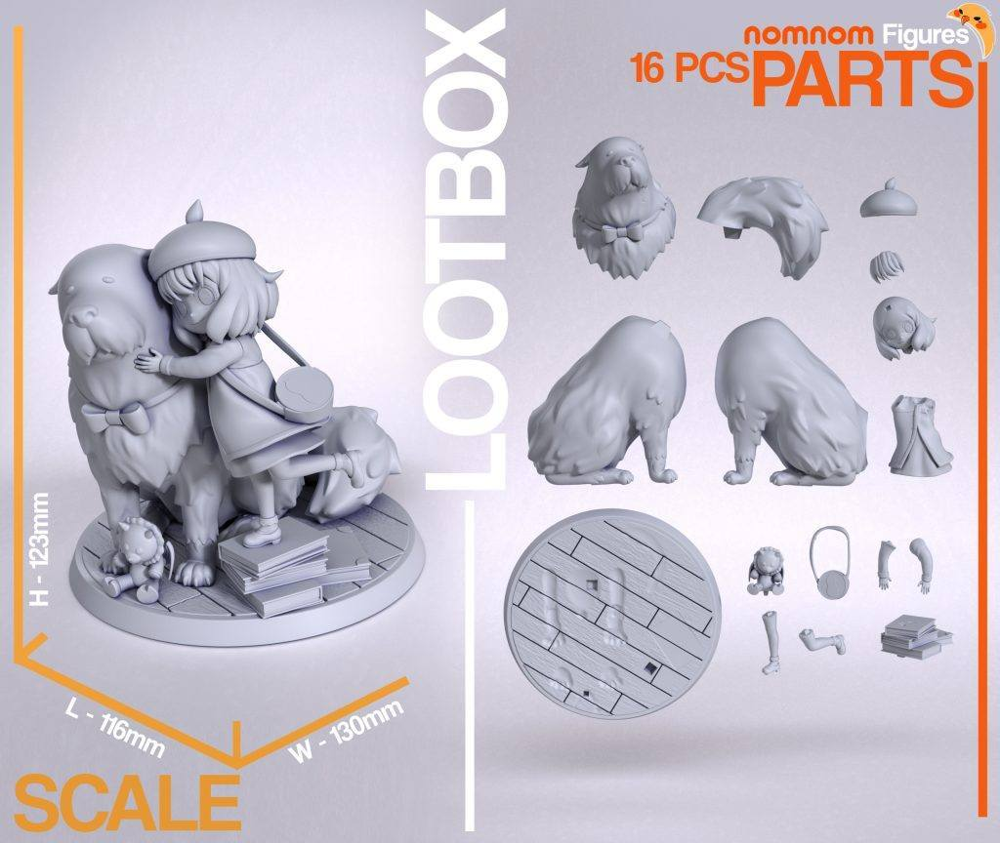
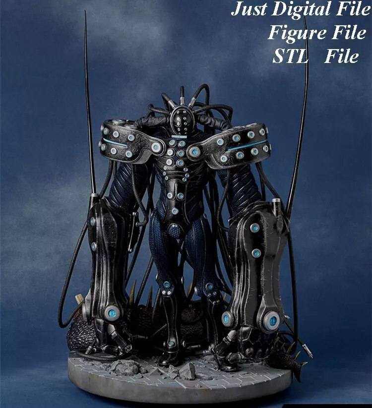
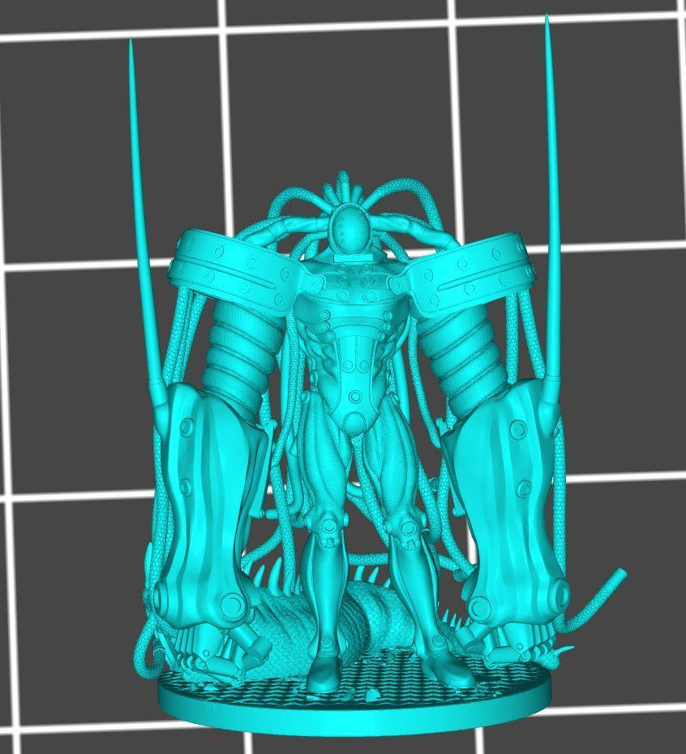
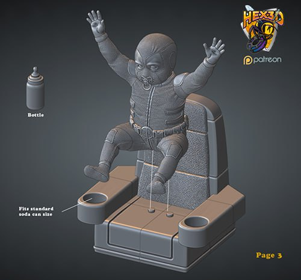
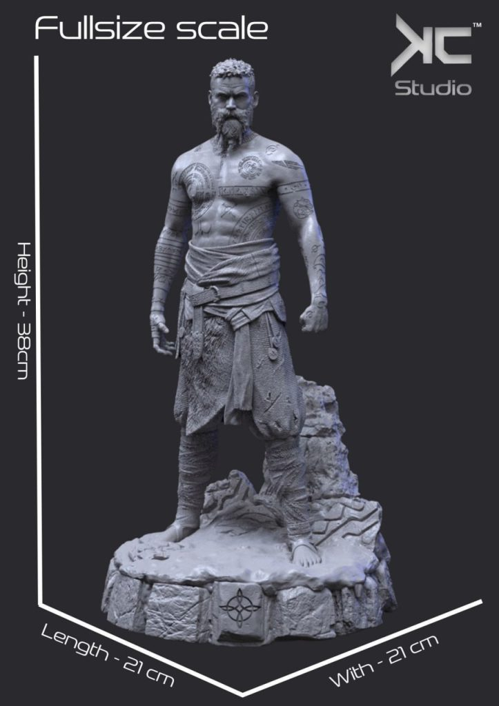
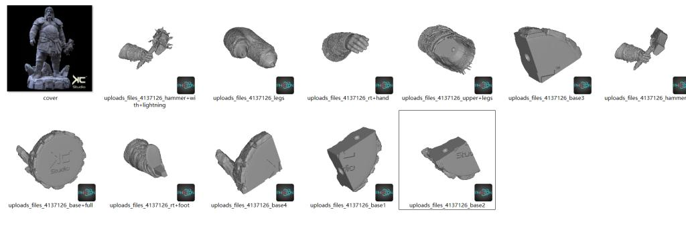
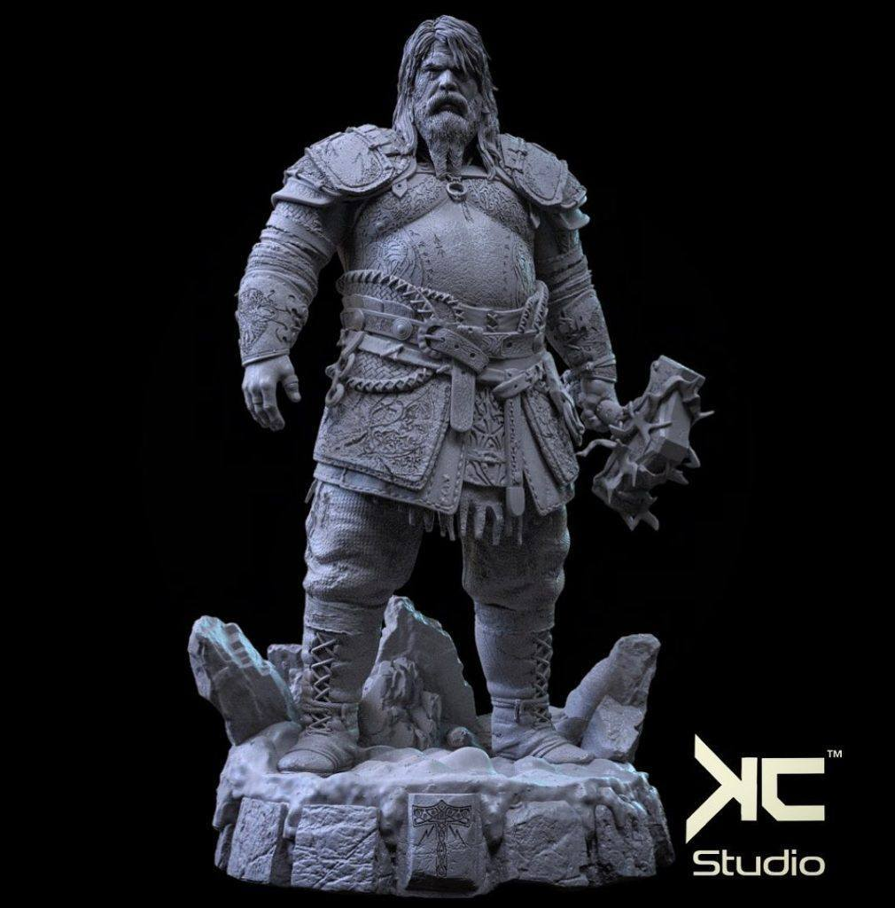

11月22日STl图纸文件分享
提取码
h8xi今天继续是群友求图的合集
马里奥桃子公主、阿尼亚、战神中的索尔和洛基、杀戮都市和死侍宝宝。
阿尼亚和彭德，nomnom工作室
链接：https://pan.baidu.com/s/1j3IxYCAPsgYj2xaVNzk8lw
提取码：h8xi


杀戮都市，模型是一体的没有分件。
链接：https://pan.baidu.com/s/1p65sexTSX9LNwmAr9L3bHw
提取码：6otg


死侍宝宝，分件不错，精度一般
链接：https://pan.baidu.com/s/12yLJC7EtmennscaeQ5VCTg
提取码：j5kz





洛基和索尔比较还原，这套还有几个有时间再找找看。
链接：https://pan.baidu.com/s/1CqTKrkanu36thehD9z6hAg
提取码：iefs

链接：https://pan.baidu.com/s/1j0BO4GGKaA7qprssN01YXg
提取码：ank3


马里奥桃子公主，分件精度还不错。
链接：https://pan.baidu.com/s/1WcG-GSlbJS5zglxRF1a-dg
提取码：cnmt
以上内容仅供个人使用（非商用）
ONLY for PERSONAL (NON-COMMERCIAL) use.
加群获得更多免费模型！